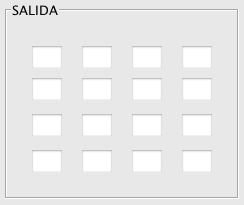

AddRoundKey
Mediante esta ventana podremos probar el funcionamiento de AddRoundkey, donde cada byte de la matriz de entrada es combinado con la clave de ronda mediante una operación XOR.
La ventana está dividida en tres partes:
Input: matriz de entrada, donde se introducirán parejas de valores hexadecimales

Key: matriz que simula lo que sería la clave de ronda. Se introducirán parejas de valores hexadecimales con los cuales se realizará la operación XOR con la entrada.

Output: en esta matriz veremos el resultado de la operación si se han introducido correctamente los valores de entrada y clave.

Para rellenar los campos de la matriz de entrada y de clave podemos proceder manualmente, pegar desde el portapapeles o bien generarla aleatoriamente pulsando el botón "Aleatorio".

Desde el menú Edición, podremos acceder a ésta y otras operaciones relativas al copiado de matrices.

Pulsando el botón "Ejecutar", se realizará la operación previa comprobación de que los datos introducidos son correctos.
Pulsando el botón "Atrás" volveremos a la ventana de herramientas.
Para una información más detallada del funcionamiento de AddRoundKey vea:
Explicación AddRoundKey